D-Deck is a distraction-free, floating desktop HUD widget and personal command center for Windows. Crafted for developers, gamers, and focused multitaskers who hate bloated subscription apps.
Windows 10 / 11 Compatible • Press Ctrl+Shift+D for Stealth Mode
Free & Open-Source
Local Zero Latency
Continuous Precision
Taskbar / Cloud Clutter
SEE IT IN ACTION
Toggle between the discreet desktop widget and the command center deck.
Deploy Client Production
Night Gaming Session
Deep Work & Schedule Navigator
92%
Consistency Index
4.5h
Deep Flow Today
4 Auto
Midnight Reset
✓ Stealth hotkey: Ctrl+Shift+D
✓ Zero taskbar intrusion • Native Acrylic Windows 11 composition
WHY D-DECK
Engineered from the ground up for maximum focus, zero distractions, and ultimate desktop control.
Floats cleanly over your wallpaper without cluttering your Windows taskbar or polluting your Alt+Tab window switcher. Summon or dismiss it anywhere, anytime with your global stealth hotkey.
1-click sprint timer directly in the titlebar (15m, 25m, 45m, 60m). Plays a soothing audio notification chime when your session completes.
Mark recurring everyday routines (gaming, hydration, coding review, workouts). At midnight, completed routines automatically uncheck for the new day.
Continuous precision alerts: 1 minute before task time, at scheduled time, and persistent reminders every minute until marked complete.
100% offline consistency counter measuring consecutive active days and weekly velocity. Stored strictly in %APPDATA%.
Take your routines, focus sprints, and daily habits with you on mobile. Direct peer-to-peer Wi-Fi sync without ever routing private tasks through third-party servers.
DOWNLOAD CENTER
Completely free, open source under MIT License. No credit cards, no signups, no telemetries.
Full desktop installer with Start Menu shortcuts and optional automatic startup on boot.
Download Setup (.exe)Run directly anywhere without installation. Perfect for USB drives or restricted machines.
Download Portable (.exe)Native Android APK with homescreen widgets, offline routines, and peer-to-peer Wi-Fi sync.
Watch on GitHub for APK DropFork the codebase, submit PRs, audit security, or build your own customizations.
View Repository & ReleasesQUESTIONS & ANSWERS
Everything you need to know about D-Deck.
"We Built Stuff"
We believe the software you use every single day should respect your attention, your privacy, and your machine's hardware. No corporate bloat, no subscription traps, and no investor metrics — just pure, high-performance tools built by people who genuinely care about craftsmanship.